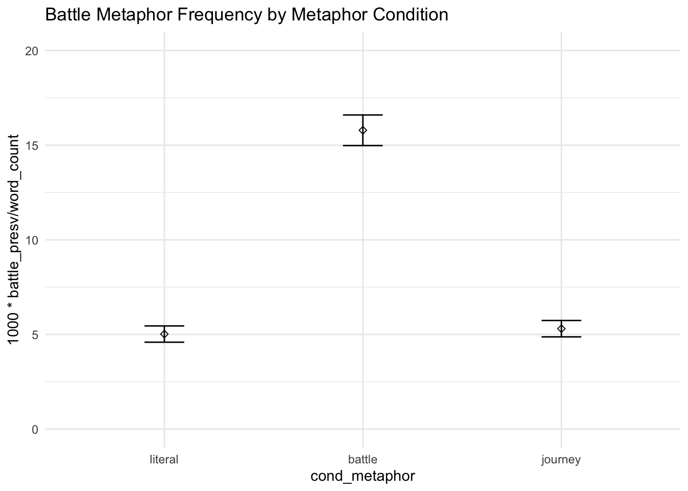
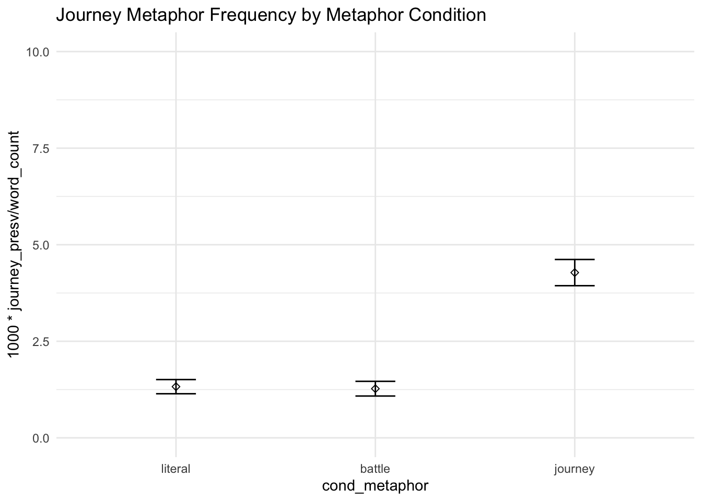
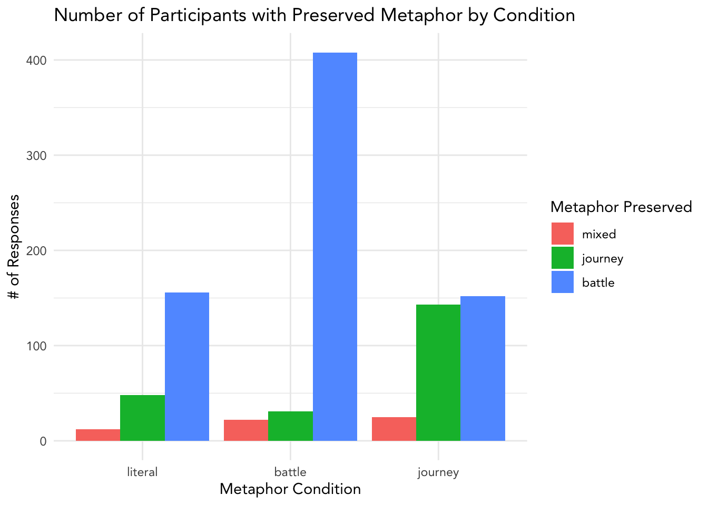
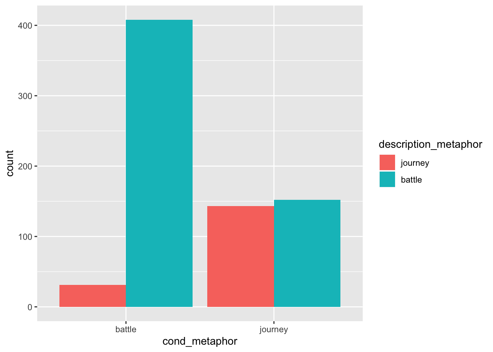
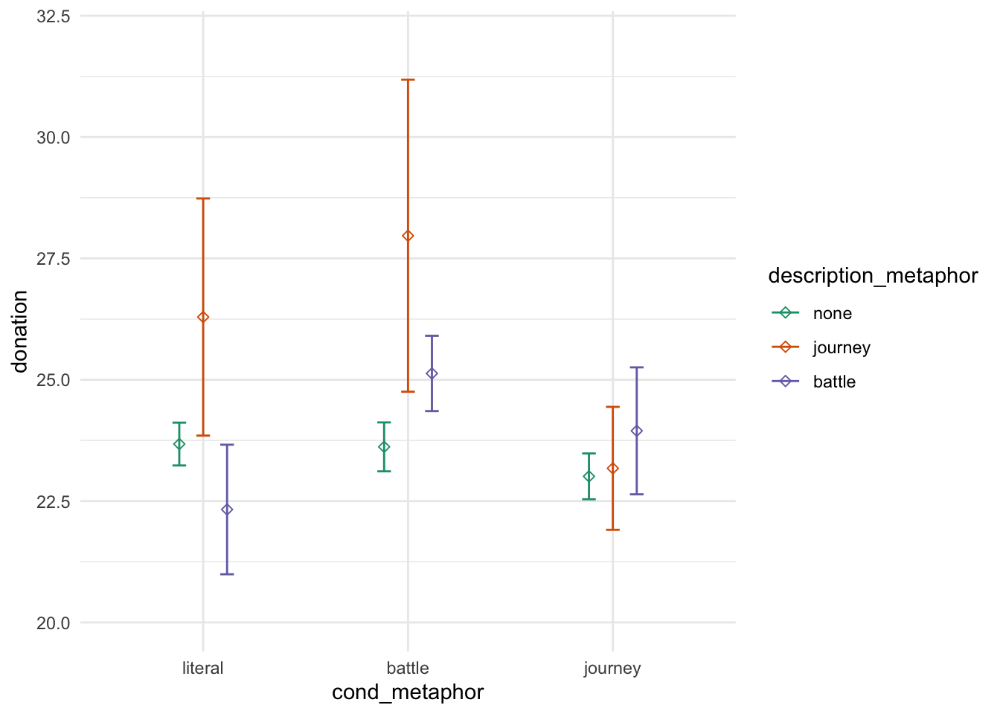

6 Descriptions
6.0.1 Quality
H: Higher quality descriptions lead to more pronounced effects of metaphor ### Metaphor
Define some keywords under two main families and one exploratory family of metaphor (only lemmas).
BATTLE_PHRASES <- c('\\bfight', '\\bfought\\b', '\\bbattling\\b', '\\bbattle', '\\bwar\\b', '\\bbeat', '\\benemy\\b', '\\bdefeat\\b',
'\\bwin\\b', '\\bcombat\\b', '\\bconquer\\b', '\\bovercome\\b', '\\bkill\\b')
JOURNEY_PHRASES <- c('\\bpath\\b', '\\bjourney\\b', '\\broad\\b', '\\brollercoaster\\b', '\\bon track\\b')
# FORCE_PHRASES <- c('forced', 'force', 'lava', 'flood', 'volcano', 'wave', 'drown', 'storm', 'disaster', 'river')Run a search over descriptions for the keywords and count their occurances.
search_description_for_battle <- function(row) {
return(sum(sapply(BATTLE_PHRASES, function (k) grepl(k, tolower(row)))))
}
search_description_for_journey <- function(row) {
return(sum(sapply(JOURNEY_PHRASES, function (k) grepl(k, tolower(row)))))
}
# search_description_for_force <- function(row) {
# return(sum(sapply(FORCE_PHRASES, function (k) grepl(k, tolower(row), fixed = T))))
# }labeled <- read_csv("../../data/data/free_responses_pre15.csv")## Parsed with column specification:
## cols(
## ppt = col_character(),
## journey = col_double(),
## battle = col_double(),
## description = col_character()
## )labeled$auto_battle = unname(sapply(labeled$description, search_description_for_battle))
labeled$auto_journey = unname(sapply(labeled$description, search_description_for_journey))
labeled <- labeled[, c("ppt", "journey", "battle", "auto_battle", "auto_journey")]
colnames(labeled) <- c("ppt", "desc_journey_present", "desc_battle_present", "auto_battle", "auto_journey")
labeled$desc_journey_present <- labeled$desc_journey_present > 0
labeled$desc_battle_present <- labeled$desc_battle_present > 0
trials_with_desc_count <- left_join(trials, labeled)## Joining, by = "ppt"trials_with_desc_count_fil <- trials_with_desc_count[!is.na(trials_with_desc_count$desc_journey_present), ]
table(trials_with_desc_count_fil$desc_journey_present, trials_with_desc_count_fil$auto_journey)##
## 0 1
## FALSE 283 0
## TRUE 2 14table(trials_with_desc_count_fil$desc_battle_present, trials_with_desc_count_fil$auto_battle)##
## 0 1 2 3
## FALSE 249 2 0 0
## TRUE 1 40 6 1trials$battle_presv = unname(sapply(trials$description, search_description_for_battle))
trials$journey_presv = unname(sapply(trials$description, search_description_for_journey))
trials$description_metaphor =
case_when(trials$battle_presv > 0 & trials$journey_presv == 0 ~ "battle",
trials$journey_presv > 0 & trials$battle_presv == 0 ~ "journey",
trials$battle_presv > 0 & trials$journey_presv > 0 ~ "mixed",
trials$battle_presv == 0 & trials$journey_presv == 0 ~ "none")
trials$description_metaphor = factor(trials$description_metaphor, levels = c("none", "mixed", "journey", "battle"))trials$word_count = sapply(trials$description, function(t) str_count(t, " ")+1)
sum(trials$battle_presv) / sum(trials$word_count) * 1000## [1] 8.554128sum(trials$journey_presv) / sum(trials$word_count) * 1000## [1] 2.695393Approxiamtely 9.5 battle metaphors per 1,000 words and 2.9 journey metaphors per 1,000 words overall.
trials %>%
ggplot(aes(cond_metaphor, 1000 * battle_presv / word_count)) + itheme +
geom_errorbars +
coord_cartesian(ylim = c(0, 20)) +
labs(title = "Battle Metaphor Frequency by Metaphor Condition")
trials %>%
ggplot(aes(cond_metaphor, 1000 * journey_presv / word_count)) + itheme +
geom_errorbars +
coord_cartesian(ylim = c(0, 10)) +
labs(title = "Journey Metaphor Frequency by Metaphor Condition")
round(100*mean(trials$description_metaphor == "battle"), 2)## [1] 15.62round(100*mean(trials$description_metaphor == "journey"), 2)## [1] 4.84round(100*mean(trials$description_metaphor == "mixed"), 2)## [1] 1.29round(100*mean(trials$description_metaphor == "none"), 2)## [1] 78.26About 22% of participants preserved a metaphor: 16% preserved a battle metaphor, 5% preserved a journey metaphor, and 1.3% preserved both metaphors.
6.0.1.1 Effect of Metaphor Condition on preserved Metaphor in Description
g = trials %>%
filter(description_metaphor %in% c("battle", "journey", "mixed")) %>%
# group_by( cond_metaphor, description_metaphor) %>%
# summarize(prop = n() / nrow(trials)) %>%
ggplot(aes(cond_metaphor, group = description_metaphor, fill = description_metaphor)) + ptheme +
# geom_point() +
# geom_line() +
geom_bar(position = "dodge") +
# scale_y_continuous(labels = scales::percent) +
# scale_x_discrete(labels = c("literal" = "Literal", "battle" = "Battle", "journey" = "Journey")) +
labs(title = "Number of Participants with Preserved Metaphor by Condition",
x = "Metaphor Condition",
y = "# of Responses",
fill = "Metaphor Preserved")
# scale_color_brewer(palette = "Set1", name = "Metaphors\nPreserved", labels = c("mixed" = "Mixed", "journey" = "Journey", "battle" = "Battle")) +
# coord_cartesian(ylim = c(0.0, 0.1))
g
# ggsave("preserved_metaphor.png", g, width = pwidth, height = pheight, bg = "transparent")Does the preservation of the same metaphor which the ppt was exposed to mediate donation amount?
Does donation behavior change when the ppt preserves the metaphor
Preservation is comprehension, engagement, care, focus, attention
Ppts who preserve the metaphor might
Does preservation predict donation amount, or does donation amount predict the preservation?
Why is it interesting if people are preserving metaphors? Shows something about the impact that the appeal has on the ppt’s framing of the situation? Ppts who preserve the exposed metaphor seem to have their framing influenced? If their framing is influenced, does that change how much they donated? so what? to affect one’s donation, it’s important that their framing is changed
literal condition is a baseline for how much we might expect the metaphor to be preserved
donations for individuals that preserve a battle metaphor
trials$preservation = as.integer(trials$journey_presv > 0)
journey_mask <- trials$cond_metaphor != "battle"
m1 <- glm(update(base.formula, preservation ~ .),
data = trials[journey_mask, ],
family = "binomial")## Warning: glm.fit: fitted probabilities numerically 0 or 1 occurredm2 <- glm(update(base.formula, preservation ~ . + cond_metaphor),
data = trials[journey_mask, ],
family = "binomial")## Warning: glm.fit: fitted probabilities numerically 0 or 1 occurredm3 <- lm(update(base.formula, donation ~ . + preservation + cond_metaphor),
data = trials[journey_mask, ])
# compare_lm(m1, m2)
# med <- mediate(m2, m3,
# treat = "cond_metaphor", mediator = "preservation",
# boot = T, boot.ci.type = "perc", sims = 1000)
#
# summary(med)We analyzed the free-response answers the participants completed in response to being asked to explain the patient’s situation to a friend. We were interested in whether the metaphor in the passage predicts the presence of metaphors in the description. We will model this with a logistic regression, accounting for the covariates included in the primary hypothesis model.
trials$preserved_metaphor = trials$description_metaphor != "none"
model_metaphor_preserve_base = glm(update(base.formula, preserved_metaphor ~ .),
data = trials,
family = "binomial")
model_metaphor_preserve_full = glm(update(base.formula, preserved_metaphor ~ . + cond_metaphor),
data = trials,
family = "binomial")
compare_lm(model_metaphor_preserve_base, model_metaphor_preserve_full)## Analysis of Deviance Table
##
## Model 1: preserved_metaphor ~ cond_sex + self_cancer + ff_cancer + gender +
## education + socioeconomic + past_donations.z + age.z
## Model 2: preserved_metaphor ~ cond_sex + self_cancer + ff_cancer + gender +
## education + socioeconomic + past_donations.z + age.z + cond_metaphor
## Resid. Df Resid. Dev Df Deviance Pr(>Chi)
## 1 4560 4722.4
## 2 4558 4597.1 2 125.33 < 2.2e-16 ***
## ---
## Signif. codes: 0 '***' 0.001 '**' 0.01 '*' 0.05 '.' 0.1 ' ' 1
## [1] Chisq Stat: 125.329## Warning in if (cls == c("lm") | cls == c("glm", "lm")) {: the condition has
## length > 1 and only the first element will be used## MODEL INFO:
## Observations: 4585
## Dependent Variable: preserved_metaphor
## Type: Generalized linear model
## Family: binomial
## Link function: logit
##
## MODEL FIT:
## χ²(26) = 204.847, p = 0.000
## Pseudo-R² (Cragg-Uhler) = 0.067
## Pseudo-R² (McFadden) = 0.043
## AIC = 4651.108, BIC = 4824.732
##
## Standard errors: MLE
## -----------------------------------------------------------------------
## Est. 2.5% 97.5% z val. p
## --------------------------- -------- -------- -------- -------- -------
## (Intercept) -3.364 -4.838 -1.890 -4.473 0.000
## cond_sexfemale 0.175 0.031 0.320 2.377 0.017
## self_cancerY -0.400 -0.771 -0.028 -2.110 0.035
## self_cancerOO -1.172 -2.232 -0.112 -2.167 0.030
## ff_cancerY 0.420 0.258 0.581 5.097 0.000
## ff_cancerOO 0.370 -0.182 0.922 1.313 0.189
## genderF 0.071 -0.076 0.217 0.947 0.344
## genderNB -1.046 -2.507 0.415 -1.404 0.160
## genderOO 0.543 -0.665 1.751 0.881 0.378
## educationHS 1.194 -0.270 2.658 1.598 0.110
## educationA 1.216 -0.256 2.689 1.619 0.105
## educationB 0.972 -0.491 2.435 1.302 0.193
## educationM 1.046 -0.427 2.520 1.392 0.164
## educationP 0.678 -0.863 2.219 0.862 0.389
## educationD 0.909 -0.643 2.460 1.148 0.251
## educationOO 0.681 -1.191 2.553 0.713 0.476
## socioeconomic10-25k -0.035 -0.311 0.241 -0.251 0.802
## socioeconomic25-50k 0.118 -0.129 0.366 0.936 0.349
## socioeconomic50-75k 0.032 -0.235 0.299 0.236 0.814
## socioeconomic75-100k 0.197 -0.103 0.497 1.288 0.198
## socioeconomic100-150k 0.238 -0.106 0.582 1.355 0.175
## socioeconomic>150k 0.464 0.001 0.927 1.963 0.050
## socioeconomicOO 0.339 -0.124 0.802 1.434 0.152
## past_donations.z -0.275 -0.760 0.211 -1.109 0.268
## age.z 0.133 -0.007 0.272 1.865 0.062
## cond_metaphorbattle 1.010 0.827 1.192 10.849 0.000
## cond_metaphorjourney 0.511 0.319 0.702 5.235 0.000
## -----------------------------------------------------------------------In both metaphor conditions, we see a significant increase in the likelihood that the participant will go on to use some sort of metaphor.
model_metaphor_preserve_base = glm(update(base.formula, I(description_metaphor == "journey") ~ .),
data = trials %>%
filter(cond_metaphor %in% c("journey", "battle"),
description_metaphor %in% c("journey", "battle")),
family = "binomial")
model_metaphor_preserve_full = glm(update(base.formula, I(description_metaphor == "journey") ~ . + cond_metaphor),
data = trials %>%
filter(cond_metaphor %in% c("journey", "battle"),
description_metaphor %in% c("journey", "battle")),
family = "binomial")
compare_lm(model_metaphor_preserve_base, model_metaphor_preserve_full)## Analysis of Deviance Table
##
## Model 1: I(description_metaphor == "journey") ~ cond_sex + self_cancer +
## ff_cancer + gender + education + socioeconomic + past_donations.z +
## age.z
## Model 2: I(description_metaphor == "journey") ~ cond_sex + self_cancer +
## ff_cancer + gender + education + socioeconomic + past_donations.z +
## age.z + cond_metaphor
## Resid. Df Resid. Dev Df Deviance Pr(>Chi)
## 1 709 769.39
## 2 708 597.64 1 171.75 < 2.2e-16 ***
## ---
## Signif. codes: 0 '***' 0.001 '**' 0.01 '*' 0.05 '.' 0.1 ' ' 1
## [1] Chisq Stat: 171.745## Warning in if (cls == c("lm") | cls == c("glm", "lm")) {: the condition has
## length > 1 and only the first element will be used## MODEL INFO:
## Observations: 734
## Dependent Variable: I(description_metaphor == "journey")
## Type: Generalized linear model
## Family: binomial
## Link function: logit
##
## MODEL FIT:
## χ²(25) = 206.330, p = 0.000
## Pseudo-R² (Cragg-Uhler) = 0.368
## Pseudo-R² (McFadden) = 0.257
## AIC = 649.641, BIC = 769.203
##
## Standard errors: MLE
## -----------------------------------------------------------------------------
## Est. 2.5% 97.5% z val. p
## --------------------------- --------- ----------- ---------- -------- -------
## (Intercept) -17.294 -3253.386 3218.799 -0.010 0.992
## cond_sexfemale -0.237 -0.646 0.171 -1.139 0.255
## self_cancerY 0.251 -0.712 1.214 0.511 0.609
## self_cancerOO -15.581 -2027.994 1996.832 -0.015 0.988
## ff_cancerY 0.278 -0.205 0.760 1.128 0.260
## ff_cancerOO -0.337 -2.072 1.399 -0.380 0.704
## genderF 0.425 0.008 0.842 1.996 0.046
## genderNB -14.094 -3330.950 3302.762 -0.008 0.993
## genderOO 0.973 -1.496 3.442 0.772 0.440
## educationHS 13.709 -3222.383 3249.802 0.008 0.993
## educationA 13.137 -3222.955 3249.230 0.008 0.994
## educationB 13.412 -3222.680 3249.505 0.008 0.994
## educationM 13.594 -3222.498 3249.687 0.008 0.993
## educationP 12.664 -3223.428 3248.757 0.008 0.994
## educationD 13.401 -3222.692 3249.494 0.008 0.994
## educationOO -0.344 -5709.171 5708.482 -0.000 1.000
## socioeconomic10-25k 0.597 -0.245 1.440 1.389 0.165
## socioeconomic25-50k 1.318 0.576 2.060 3.482 0.000
## socioeconomic50-75k 1.086 0.285 1.886 2.658 0.008
## socioeconomic75-100k 1.027 0.132 1.923 2.249 0.025
## socioeconomic100-150k 0.271 -0.812 1.355 0.491 0.624
## socioeconomic>150k 0.598 -0.712 1.908 0.895 0.371
## socioeconomicOO 1.274 -0.049 2.598 1.888 0.059
## past_donations.z -0.537 -2.762 1.689 -0.473 0.637
## age.z -0.034 -0.722 0.654 -0.097 0.923
## cond_metaphorjourney 2.627 2.175 3.079 11.395 0.000
## -----------------------------------------------------------------------------In both metaphor conditions, we see a significant increase in the likelihood that the participant will go on to use a journey metaphor.
trials %>%
filter(cond_metaphor %in% c("journey", "battle"),
description_metaphor %in% c("journey", "battle")) %>%
ggplot() +
geom_bar(aes(cond_metaphor, fill = description_metaphor), position = "dodge")
model_metaphor_preserve_base = glm(update(base.formula, I(description_metaphor == "battle") ~ .),
data = trials %>%
filter(cond_metaphor %in% c("journey", "battle"),
description_metaphor %in% c("journey", "battle")),
family = "binomial")
model_metaphor_preserve_full = glm(update(base.formula, I(description_metaphor == "battle") ~ . + cond_metaphor),
data = trials %>%
filter(cond_metaphor %in% c("journey", "battle"),
description_metaphor %in% c("journey", "battle")),
family = "binomial")
compare_lm(model_metaphor_preserve_base, model_metaphor_preserve_full)## Analysis of Deviance Table
##
## Model 1: I(description_metaphor == "battle") ~ cond_sex + self_cancer +
## ff_cancer + gender + education + socioeconomic + past_donations.z +
## age.z
## Model 2: I(description_metaphor == "battle") ~ cond_sex + self_cancer +
## ff_cancer + gender + education + socioeconomic + past_donations.z +
## age.z + cond_metaphor
## Resid. Df Resid. Dev Df Deviance Pr(>Chi)
## 1 709 769.39
## 2 708 597.64 1 171.75 < 2.2e-16 ***
## ---
## Signif. codes: 0 '***' 0.001 '**' 0.01 '*' 0.05 '.' 0.1 ' ' 1
## [1] Chisq Stat: 171.745## Warning in if (cls == c("lm") | cls == c("glm", "lm")) {: the condition has
## length > 1 and only the first element will be used## MODEL INFO:
## Observations: 734
## Dependent Variable: I(description_metaphor == "battle")
## Type: Generalized linear model
## Family: binomial
## Link function: logit
##
## MODEL FIT:
## χ²(25) = 206.330, p = 0.000
## Pseudo-R² (Cragg-Uhler) = 0.368
## Pseudo-R² (McFadden) = 0.257
## AIC = 649.641, BIC = 769.203
##
## Standard errors: MLE
## ------------------------------------------------------------------------------
## Est. 2.5% 97.5% z val. p
## --------------------------- --------- ----------- ---------- --------- -------
## (Intercept) 17.294 -3218.799 3253.386 0.010 0.992
## cond_sexfemale 0.237 -0.171 0.646 1.139 0.255
## self_cancerY -0.251 -1.214 0.712 -0.511 0.609
## self_cancerOO 15.581 -1996.832 2027.994 0.015 0.988
## ff_cancerY -0.278 -0.760 0.205 -1.128 0.260
## ff_cancerOO 0.337 -1.399 2.072 0.380 0.704
## genderF -0.425 -0.842 -0.008 -1.996 0.046
## genderNB 14.094 -3302.762 3330.950 0.008 0.993
## genderOO -0.973 -3.442 1.496 -0.772 0.440
## educationHS -13.709 -3249.802 3222.383 -0.008 0.993
## educationA -13.137 -3249.230 3222.955 -0.008 0.994
## educationB -13.412 -3249.505 3222.680 -0.008 0.994
## educationM -13.594 -3249.687 3222.498 -0.008 0.993
## educationP -12.664 -3248.757 3223.428 -0.008 0.994
## educationD -13.401 -3249.494 3222.692 -0.008 0.994
## educationOO 0.344 -5708.482 5709.171 0.000 1.000
## socioeconomic10-25k -0.597 -1.440 0.245 -1.389 0.165
## socioeconomic25-50k -1.318 -2.060 -0.576 -3.482 0.000
## socioeconomic50-75k -1.086 -1.886 -0.285 -2.658 0.008
## socioeconomic75-100k -1.027 -1.923 -0.132 -2.249 0.025
## socioeconomic100-150k -0.271 -1.355 0.812 -0.491 0.624
## socioeconomic>150k -0.598 -1.908 0.712 -0.895 0.371
## socioeconomicOO -1.274 -2.598 0.049 -1.888 0.059
## past_donations.z 0.537 -1.689 2.762 0.473 0.637
## age.z 0.034 -0.654 0.722 0.097 0.923
## cond_metaphorjourney -2.627 -3.079 -2.175 -11.395 0.000
## ------------------------------------------------------------------------------In the battle metaphor condition, we see a significant increase in the likelihood that the participant will go on to use a battle metaphor. This increase does not exist for participants who were exposed to journey metaphors.
6.0.1.2 Effect of Preserved Metaphor on Donation Behavior
Additionally, we are interested in knowing whether preserved metaphor usage in responses predicts a main effect of donation amount. We will model this with an ordinary linear regression model, accounting for the same covariates as the other models.
model_preserved_base = lm(update(base.formula, donation ~ .), data = trials)
model_preserved_full = lm(update(base.formula, donation ~ . + preserved_metaphor), data = trials)
compare_lm(model_preserved_base, model_preserved_full)## Analysis of Variance Table
##
## Model 1: donation ~ cond_sex + self_cancer + ff_cancer + gender + education +
## socioeconomic + past_donations.z + age.z
## Model 2: donation ~ cond_sex + self_cancer + ff_cancer + gender + education +
## socioeconomic + past_donations.z + age.z + preserved_metaphor
## Res.Df RSS Df Sum of Sq Pr(>Chi)
## 1 4560 1172938
## 2 4559 1172196 1 741.88 0.08939 .
## ---
## Signif. codes: 0 '***' 0.001 '**' 0.01 '*' 0.05 '.' 0.1 ' ' 1
## [1] Chisq Stat: 2.901## Warning in if (cls == c("lm") | cls == c("glm", "lm")) {: the condition has
## length > 1 and only the first element will be used## MODEL INFO:
## Observations: 4585
## Dependent Variable: donation
## Type: OLS linear regression
##
## MODEL FIT:
## F(25,4559) = 4.490, p = 0.000
## R² = 0.024
## Adj. R² = 0.019
##
## Standard errors: OLS
## -------------------------------------------------------------------------
## Est. 2.5% 97.5% t val. p
## ---------------------------- -------- --------- -------- -------- -------
## (Intercept) 23.372 17.095 29.648 7.300 0.000
## cond_sexfemale -0.480 -1.412 0.452 -1.010 0.312
## self_cancerY 4.822 2.588 7.057 4.231 0.000
## self_cancerOO 5.155 0.269 10.041 2.069 0.039
## ff_cancerY 1.806 0.800 2.812 3.521 0.000
## ff_cancerOO 3.727 0.179 7.275 2.060 0.040
## genderF 0.982 0.032 1.931 2.026 0.043
## genderNB 2.556 -3.792 8.904 0.789 0.430
## genderOO -5.813 -14.724 3.098 -1.279 0.201
## educationHS -3.248 -9.517 3.022 -1.016 0.310
## educationA -3.260 -9.617 3.098 -1.005 0.315
## educationB -1.766 -8.018 4.487 -0.554 0.580
## educationM -0.112 -6.464 6.241 -0.034 0.972
## educationP -1.351 -8.208 5.505 -0.386 0.699
## educationD -2.651 -9.732 4.431 -0.734 0.463
## educationOO -3.213 -13.095 6.669 -0.638 0.524
## socioeconomic10-25k -1.015 -2.773 0.744 -1.131 0.258
## socioeconomic25-50k 0.076 -1.520 1.672 0.093 0.926
## socioeconomic50-75k 1.085 -0.611 2.781 1.254 0.210
## socioeconomic75-100k 1.915 -0.036 3.866 1.924 0.054
## socioeconomic100-150k 0.980 -1.267 3.226 0.855 0.393
## socioeconomic>150k 1.573 -1.588 4.733 0.976 0.329
## socioeconomicOO -2.222 -5.402 0.958 -1.370 0.171
## past_donations.z 1.094 0.163 2.026 2.303 0.021
## age.z 0.390 -0.561 1.340 0.804 0.421
## preserved_metaphorTRUE 0.983 -0.152 2.118 1.699 0.089
## -------------------------------------------------------------------------6.0.1.3 Interaction of Preserved Metaphor on Donation Behavior
print_crosstabs(ftable(trials$cond_metaphor, trials$description_metaphor))## none mixed journey battle
##
## literal 1346 12 48 156
## battle 1053 22 31 408
## journey 1189 25 143 152
##
## none mixed journey battle
##
## literal 0.294 0.003 0.010 0.034
## battle 0.230 0.005 0.007 0.089
## journey 0.259 0.005 0.031 0.033trials %>%
filter(description_metaphor != "mixed") %>%
ggplot(aes(cond_metaphor, donation, color = description_metaphor)) + itheme +
geom_errorbars +
coord_cartesian(ylim = c(20, 32))
NH: Donation amounts do not differ between participants who preserve the metaphor they were exposed to and those who did not preserve any metaphor.
model_preserved_base = lm(update(base.formula, donation ~ . + cond_metaphor),
data = trials) #filter(trials, description_metaphor != "none"))
model_preserved_mid = lm(update(base.formula, donation ~ . + cond_metaphor + description_metaphor),
data = trials) #filter(trials, description_metaphor != "none"))
model_preserved_full = lm(update(base.formula, donation ~ . + cond_metaphor * description_metaphor),
data = trials) #filter(trials, description_metaphor != "none"))
compare_lm(model_preserved_base, model_preserved_mid)## Analysis of Variance Table
##
## Model 1: donation ~ cond_sex + self_cancer + ff_cancer + gender + education +
## socioeconomic + past_donations.z + age.z + cond_metaphor
## Model 2: donation ~ cond_sex + self_cancer + ff_cancer + gender + education +
## socioeconomic + past_donations.z + age.z + cond_metaphor +
## description_metaphor
## Res.Df RSS Df Sum of Sq Pr(>Chi)
## 1 4558 1171827
## 2 4555 1171192 3 635.05 0.4808
## [1] Chisq Stat: 2.485compare_lm(model_preserved_mid, model_preserved_full)## Analysis of Variance Table
##
## Model 1: donation ~ cond_sex + self_cancer + ff_cancer + gender + education +
## socioeconomic + past_donations.z + age.z + cond_metaphor +
## description_metaphor
## Model 2: donation ~ cond_sex + self_cancer + ff_cancer + gender + education +
## socioeconomic + past_donations.z + age.z + cond_metaphor +
## description_metaphor + cond_metaphor:description_metaphor
## Res.Df RSS Df Sum of Sq Pr(>Chi)
## 1 4555 1171192
## 2 4549 1169198 6 1994.4 0.2562
## [1] Chisq Stat: 7.814model_urgent_base = lm(update(base.formula, urgent ~ .),
data = filter(trials, description_metaphor != "none"))
model_urgent_full = lm(update(base.formula, urgent ~ . + I(description_metaphor == "battle")),
data = filter(trials, description_metaphor != "none"))
compare_lm(model_urgent_base, model_urgent_full)## Analysis of Variance Table
##
## Model 1: urgent ~ cond_sex + self_cancer + ff_cancer + gender + education +
## socioeconomic + past_donations.z + age.z
## Model 2: urgent ~ cond_sex + self_cancer + ff_cancer + gender + education +
## socioeconomic + past_donations.z + age.z + I(description_metaphor ==
## "battle")
## Res.Df RSS Df Sum of Sq Pr(>Chi)
## 1 972 1483.9
## 2 971 1467.0 1 16.873 0.0008323 ***
## ---
## Signif. codes: 0 '***' 0.001 '**' 0.01 '*' 0.05 '.' 0.1 ' ' 1
## [1] Chisq Stat: 11.401## Warning in if (cls == c("lm") | cls == c("glm", "lm")) {: the condition has
## length > 1 and only the first element will be used## MODEL INFO:
## Observations: 997
## Dependent Variable: urgent
## Type: OLS linear regression
##
## MODEL FIT:
## F(25,971) = 1.369, p = 0.107
## R² = 0.034
## Adj. R² = 0.009
##
## Standard errors: OLS
## ------------------------------------------------------------------------
## Est. 2.5% 97.5% t val. p
## ----------------------------- -------- -------- ------- -------- -------
## (Intercept) 5.789 4.013 7.566 6.396 0.000
## cond_sexfemale -0.127 -0.283 0.028 -1.605 0.109
## self_cancerY 0.207 -0.202 0.615 0.992 0.321
## self_cancerOO -0.566 -1.860 0.728 -0.858 0.391
## ff_cancerY 0.013 -0.166 0.192 0.142 0.887
## ff_cancerOO -0.010 -0.633 0.612 -0.032 0.974
## genderF -0.040 -0.199 0.120 -0.488 0.626
## genderNB 0.237 -1.487 1.961 0.270 0.788
## genderOO 0.366 -0.740 1.472 0.650 0.516
## educationHS -1.208 -2.955 0.540 -1.356 0.175
## educationA -1.194 -2.948 0.560 -1.336 0.182
## educationB -1.250 -2.993 0.492 -1.408 0.159
## educationM -1.460 -3.214 0.294 -1.634 0.103
## educationP -1.558 -3.378 0.262 -1.680 0.093
## educationD -1.351 -3.181 0.478 -1.450 0.148
## educationOO -1.408 -3.562 0.745 -1.283 0.200
## socioeconomic10-25k 0.174 -0.128 0.475 1.132 0.258
## socioeconomic25-50k 0.149 -0.119 0.418 1.091 0.276
## socioeconomic50-75k 0.264 -0.026 0.555 1.784 0.075
## socioeconomic75-100k -0.018 -0.340 0.304 -0.109 0.913
## socioeconomic100-150k -0.067 -0.438 0.305 -0.352 0.725
## socioeconomic>150k 0.093 -0.392 0.578 0.376 0.707
## socioeconomicOO -0.032 -0.521 0.457 -0.128 0.898
## past_donations.z 0.161 -0.752 1.074 0.347 0.729
## age.z 0.137 -0.125 0.399 1.028 0.304
## I(description_metaphor == 0.296 0.122 0.469 3.342 0.001
## "battle")TRUE
## ------------------------------------------------------------------------